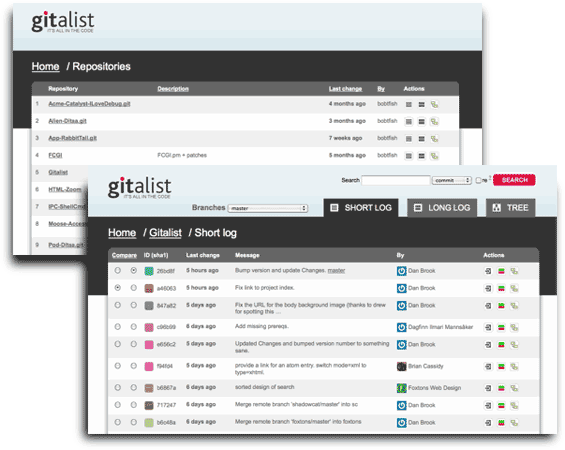

[%
SET page = {
title => 'Gitalist - a modern git web viewer',
};
PROCESS inc/top.html
%]

Gitalist
A web git viewer for your git repository (local or server)
Features
- Multiple repository support
- Multiple branch support
- Commit comparisons
- Atom feeds
- Color coded commit history
- Gitweb.cgi URL compatibility
Status
-
Status
-
Good enough to use, but with some rough edges.
-
Stable
-
0.003005
-
Development
-
wilson
Contact / help
IRC: irc.perl.org #gitalist
Bug reports: Perl RT
Short slideshow on Gitalist
[% PROCESS inc/bottom.html %]